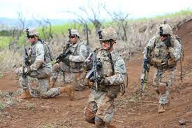

War between India and Pakistan
The primary mission of the Indian Army is to ensure national security and national unity, to defend the nation from external aggression and internal threats, and to maintain peace and security within its borders.
The army has been involved in four wars with neighbouring Pakistan and one with China. Other major operations undertaken by the army include Operation Vijay, Operation Meghdoot, and Operation Cactus
Initially, the army's main objective was to defend the nation's frontiers. However, over the years, the army has also taken up the responsibility of providing internal security, especially against insurgencies in Kashmir and Northeast India. Currently, the army is also looking at enhancing its special forces capabilities.
The current combat doctrine of the Indian Army is based on effectively utilising holding formations and strike formations. In the case of an attack, the holding formations would contain the enemy and strike formations would counter-attack to neutralise enemy forces. In the case of an Indian attack, the holding formations would pin enemy forces down, whilst the strike formations would attack at a point of India's choosing. The Indian Army is large enough to devote several corps to the strike role.